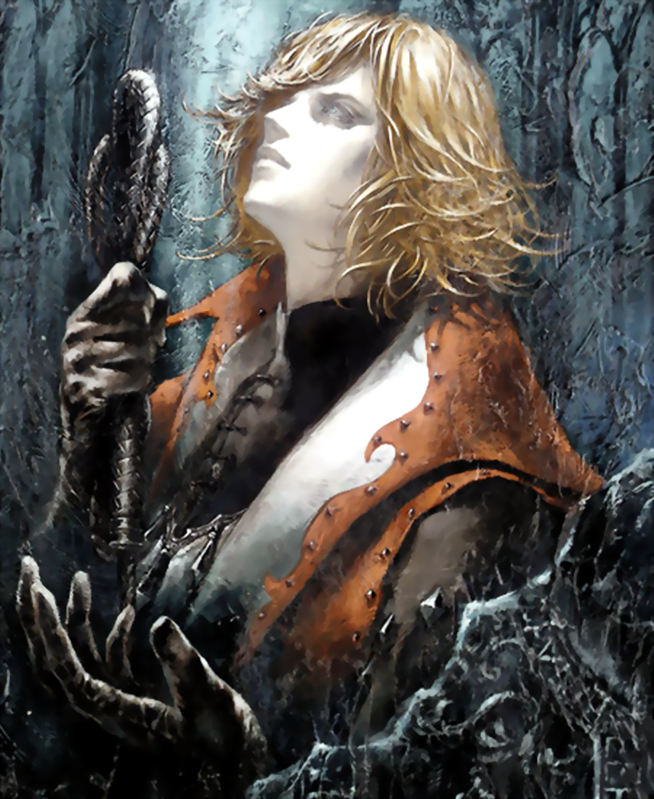
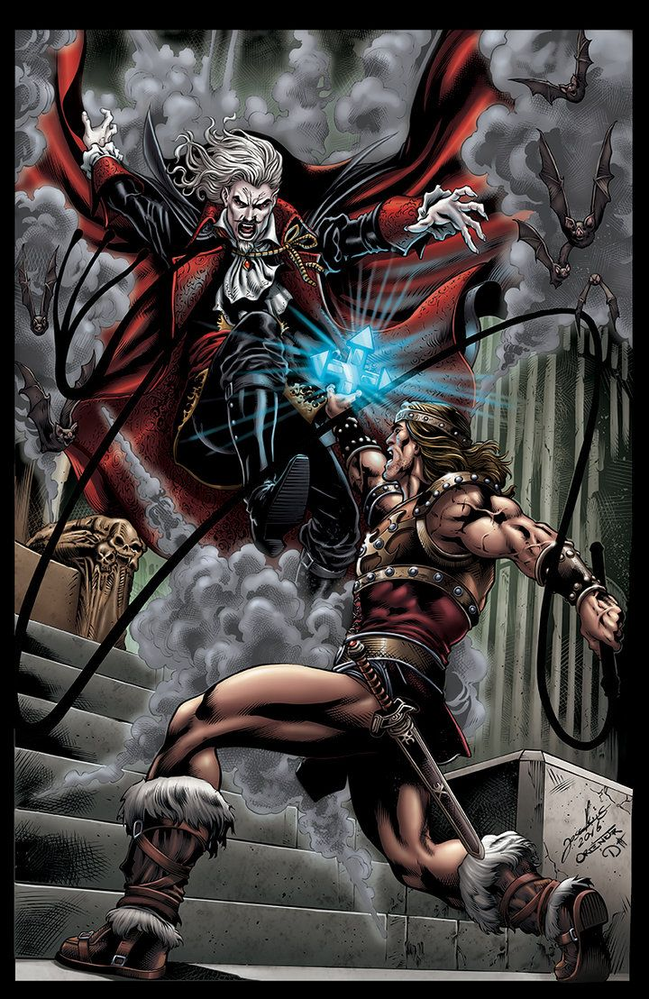
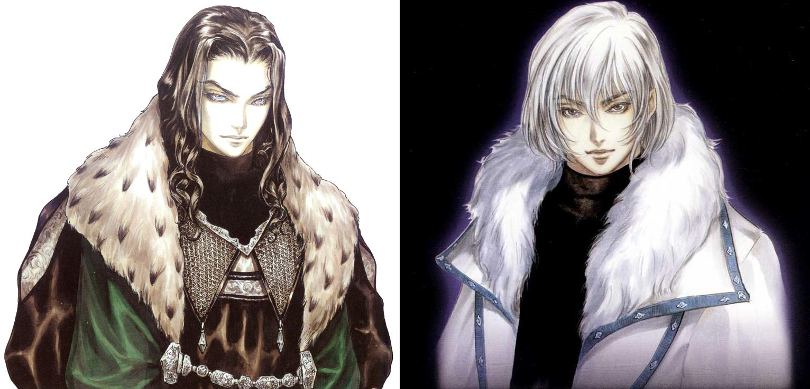

Historia Castelvania, universo de Soma Cruz
Inicio
Todo empieza en el siglo XI, donde existian tanto los humanos que reprensentaban la luminosidad como las criaturas de la noche que reprensentaban la oscuridad, entre los humanos destacaban dos guerreros, Leon Belmont, un maestro es las artes del latigo, y Mathias Cronqvist, un experto en la alquimia y las artes magicas. Un día la esposa de Mathias muere a causa de una enfermedad, lo que causa que Mathias se sienta traicionado y abandonado por dios, esto porvoco que desapareciese del campo de batalla, dejando a Leon solo. Pasado un tiempo la mujer de Leon, Sara Trantoul fue secuestrada por un famoso vampiro llamado Walter Bernhard, este vampiro era conocido debido a que habia fusionado su alma con la piedra carmesi, lo que le otorgaba un imenso poder y lo hacia invulnerable a casi cualquier ataque, Leon al enterarse del secuestro de su mujer, fue directamente al castillo donde residia Walter, una vez dentro Leon fue venciendo a todas las aberraciones que tenia Walter como subditos, hasta que se encontro con un hombre llamado Rinaldo Gandolfi, Gandolfi era un poderoso alquimista que habia perdido a su mujer a manos de Walter, y decidio quedarse en el castillo para ayudar al siguiente guerrero que llegase a derrotar a Walter. Una vez Gandolfi y Leon se conocen mejor, Gandolfi le confiesa a Leon el secreto para poder vencer a Walter, el secreto se trataba de que lo unico que podia dañar a Walter era su propia sangre, con esto en mente Leon continuo avanzando en el castillo y una vez ya solo quedaba Walter, se encontraron cara a cara, Walter le dio a su esposa, pero esta habia sido convertida en vampiro por Walter, por lo que Leon corrio junto a Gandolfi el cual le dijo que si queria vengarse tendrian que sacrificar a su esposa, aunque esta ya no era su esposa, se habia vuelto una vampiresa salvaje, por lo que la sacrifican y crean el latigo Vampire Killer, la unica arma capaz de dañar a Walter. Ahora que Leon Belmont habia perdido a su esposa y ya poseia el poder necesario como para asesinar a Walter, fue a enfrentarlo y lo acabo derrotando, pero, antes de darle el último latigazo para acabar con su vida, aparecio Mathias el cual aprovecho el momento y le arrebato el alma a Walter, transoformandose en vampiro y adquiriendo el poder de la piedra carmesi, Leon no entendia lo que estaba sucediendo, por lo que Mathias le explico que habia manipulado a Walter para que secuestrase a su esposa lo que provocaria que Leon fuese a asesinarlo, y cuando fuese el momento justo Mathias le robase el poder a Walter, poder que utilizaria para vengarse de dios. Mathias le ofrecio a Leon unirse a el, pero Leon con ira lo rechazo y le prometio que a partir de ese momento toda su descendencia luchara para acabar con el, una vez Leon le dijo esto Mathias se decepciono y se marcho, mientras que Leon Belmont eredo el vampire killer a su hijo y lo entreno para matar criaturas oscuras
Muerte de Lisa, nacimiento de Alucard y la muerte definitiva de Dracula
Una vez Mathias consiguio robar el poder de Walter, se conviertio en el señor oscuro, y decidio cambiar su nombre a Vlad Tepes, una de las priemras cosas que hizo al transformarse en vampiro fue crear un gran castillo al cual decidio nombrar como Castelvania. Pasado el tiempo empezaron a llegar los descendientes de Leon Belmont al castillo de Vlad, los cuales lo desafiaban y siempre acababan venciendo, pero nunca lo podian llegar a asesinar, debido a que el alma de Walter que Vlad habia absorvido se habia mezclado con la suya lo que causaba que el vampire killer no lo matase pero si lo debilitaba hasta el punto de tener que dormir un siglo entero para recuperarse. Una de las veces en las que fue vencido decidio esconderse de los Belmont una temporada, durante ese tiempo conocio a una mujer llamada Lisa de la cual se enamora y con la que acabo teniendo un hijo, llamado Adrian Farhenheit, la mujer acabo siendo asesinada ya que la gente de un pueblo cercano la confundieron con una bruja, Vlad estallo de ira y sientiendose traicionado por dios de nuevo, decidio tanto cambiar su nombre al de Dracula como acabar con la humanidad, mientras que su hijo, decepcionado de la decision de su padre, se cambio el nombre a Alucard y comenzo a plantarle cara a su padre. Trans varios siglos en los que Dracula era derrotado por los Belmont, en ocasiones ayudados por Alucard, llego el último de los Belmont, llamado Julius Belmont, este destruyo directamente el alma de Dracula lo que lo mato definitivamente
Soma Cruz, la rencarnacion de Dracula
Una vez Dracula habia muerto definitivamente, se pensaba que ya no volveria a ver ningun señor oscuro, hasta que en 2035, aparecio un joben llamado Soma Cruz, el cual era la reencarnación de Dracula, esto porvoco que una secta, adoradora del señor oscuro, secuestrase a Soma, para así volverlo el nuevo señor oscuro, pero esto fue evitado gracias a que tento Alucard como Julius fueron a rescatarlo y en caso de que se llegase a convertir en Dracula, a matarlo, pero por suerte Soma se resistio al poder oscuro y acabo volviendo a su vida normal.